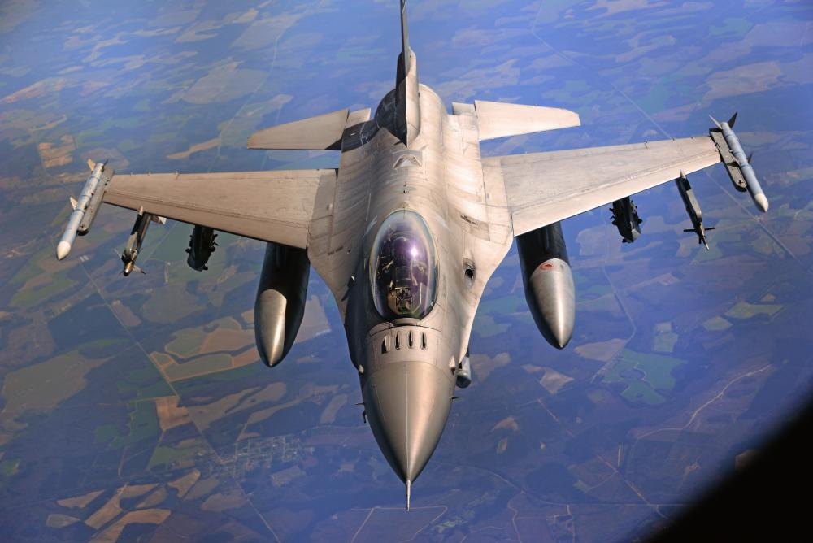

My Education
- 2009-2012 - Clearfield High School, Clearfield, UT
- 2015-2020 - Brigham Young University, Provo, UT
- Bachelors of Science in Mechanical Engineering
- Minor in Mathematics
- Minor in Computer Science
- Minor in Business
- 2021-Present - Utah State University, Logan, UT
- Masters of Science in Computer Science
My Experience
- 2018 - Research Assistant, BYU Department of Statistics
- Developed Python projects to autonomously collect and store data on over 23,000 NBA games and 1,800 NBA players
- 2018-2019 - Teaching Assistant, BYU Department of Physics and Astronomy
- Taught students to learn processes in approaching and solving complex conceptual and mathematical problems.
- 2019-2020 - Engineering Intern/Student Engineer, WesTech Engineering
- Collected and processed historical water quality data to be used in a machine learning model
- Trained a hybrid SVM and Random Forest Regressor that reliably predicted future water conditions at a pilot plant with 95% precision and 60% accuracy using limited data
- Designed architecture for relational and graph databases to store equipment and water quality data
- 2020-Present - Computer Scientist, United States Air Force
- Developed and conducted system-level test on software suites used on the F-16 fighter jet
- Assisted in the design, implementation and usage processes of an organizational database aimed at streamlining the tracking and improvment of tests and their results

My Skills
- Proficient with Adobe Creative Suite (Photoshop, Illustrator, and InDesign)
- Proficient in C++, Java, SQL, HTML, CSS, Cypher, and Python
- Familiar with version control and Git
- Competent with CAD modeling in CATIA and AutoDesk
- Proficient with Microsoft Word, Power BI, and Excel
- Familiar with database architecture for both relational and graphical databases